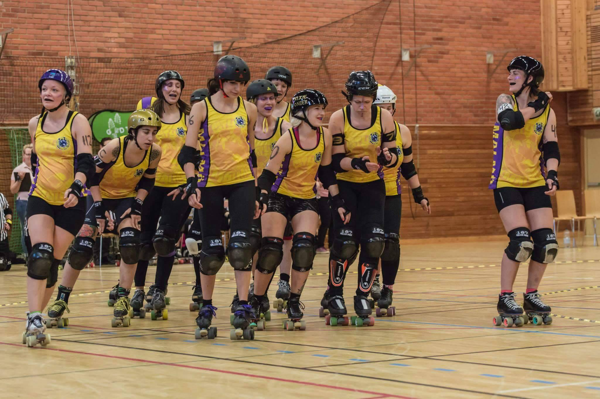

Crime City (B) gear up for Tenerife.
Whilst now most of the big events are finally dying down as leagues head into their winter off-season (sometimes reluctantly), there's still some sunny climes where tournaments are yet to come. In particular, Tenerife Roller Derby have been on a bit of a tournament kick recently, and are topping their previous three-team international tournament (against Paris and Royal Windsor) with a possibly even more international one, by distance, as Dundee Roller Girls and Malmö's Crime City (B) both fly down to the Canaries to take in a bit of sun, and a lot of Derby.
In this interview, we caught up with Darling Ripper, of Crime City B, to see how the Swedish team are feeling about skating in 20º Celcius heat in December.
 Crime City B, Darling Ripper middle (visible 6 on arm) Photo: Helena Mettävainio
Crime City B have had a very good year to date - you have won all 5 of your games, mostly by quite big margins.In particular, you seem to have made a big jump in performance, to judge from your rematch against Copenhagen and Berlin! In 2015, you lost in quite a close game to Copenhagen, in 2016, you won extremely convincingly; and while you've won against the Inglorious Bombshells twice, you increased your lead this year. Can you say how the year has been from your perspective, and if the team has been doing particular thing to improve this strongly?
DR: It has been a really great year for us and we are very proud of our own development! It's always hard to know exactly why we have improved this much, but I think it's due to the fact that our charter has been rather stable for the last year so we've become a really close-knit team and we have so much fun playing together as well! It also helps having such great coaches from our A and B team.
In fact, Swedish (and Finnish, so maybe "Scandinavian"  ) Roller Derby has been doing exceptionally well in recent years. Do you have any thoughts about what Sweden is doing well, in general?
) Roller Derby has been doing exceptionally well in recent years. Do you have any thoughts about what Sweden is doing well, in general?
DR: Haha, I don't know what Sweden is doing in general, maybe wrestling polar bears? But I think the Scandinavian teams are quite good at helping each other out and we play and practice together in different ways so maybe that's why.
Tenerife will be the furthest Crime City B have travelled for a bout since you've existed. Do long trips feel different than short ones - and how are you expecting to deal with the much warmer climate?
DR: Traveling is always exhausting, but we are really excited to go to Tenerife and look forward to get away from the cold here in Crime City.
Flat Track Stats puts you as the favourite to win this tournament too, with Dundee Roller Girls and Tenerife both roughly equally rated. What's the teams' goal for this final tournament of the year? (Are you aiming to win, or do you have personal goals, or other goals here?)
DR: Our aim for the tournament is to have fun and play our best game. We expect a hard competition from both teams.
Finally, with this year going so well, what's next for Crime City B next year? Will you be aiming at higher level opponents - Flat Track Stats thinks that you're on a level with, say Nantes or Auld Reekie - and our own ratings put you a little higher, and in contention with the next tier of French teams, maybe Newcastle Roller Girls…
DR: We will have to wait and see what next year will bring us! But it would be fun to play those higher-ranked teams you mention. As a B team, it can sometimes be a bit hard to find competition at your level, seeing how we are not a WFTDA team and therefore can't play Sanctioned bouts. I hope more higher-ranked teams will be interested in playing us now that we have shown that we can put up a good fight!
The Tenerife Triple Header will be on December 17th, from 14:00 (WET, which is the same as GMT) in Pancho Camurria Sports Centre, Santa Cruz, Tenerife. There's no event page at present, but we will add more information as we have it.
Dundee Roller Girls are raising money to fund their attendance here: https://www.gofundme.com/drg-tenerife-tour . We will add funding links for other teams if we are made aware of them.